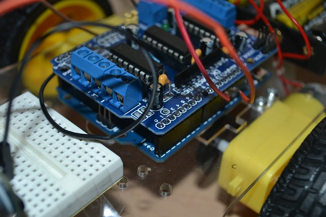

¿Por que se debería implementar la plataforma Arduino?
La implementación de la plataforma Arduino ofrece ciertas ventajas como es la facilidad de uso, emplea un lenguaje de programación en C++, es apto tanto para el ámbito educativo como el profesional, promueve la creatividad como el pensamiento critico, estimula la capacidad de resolución de problema, permite la creación de proyectos personalizados.
